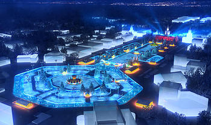

27 декабря 2014г

НАЧИНАЕМ ОТДЫХАТЬ!
-
Отправиться в Государственный Дарвиновский музей, побывать у первобытных людей и узнать как встречали Новый год в каменном веке.
-
Посетить самый большой каток на ВДНХ
-
Перед сном обязательно посмотреть «Один Дома» 1,2 части («Home Alone» 1990 г., и «Home Alone 2: Lost in New York» 1992 г.). Семья из Чикаго отправляется в Европу, но в спешке сборов бестолковые родители забывают дома… одного из своих детей, да к тому же еще и самого младшего. Юное создание, однако, не теряется и демонстрирует чудеса изобретательности. И когда в дом залезают грабители, им приходится не раз пожалеть о встрече с милым крошкой.